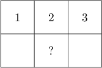
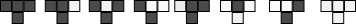
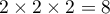
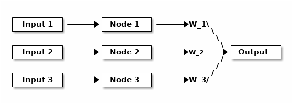
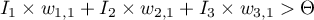
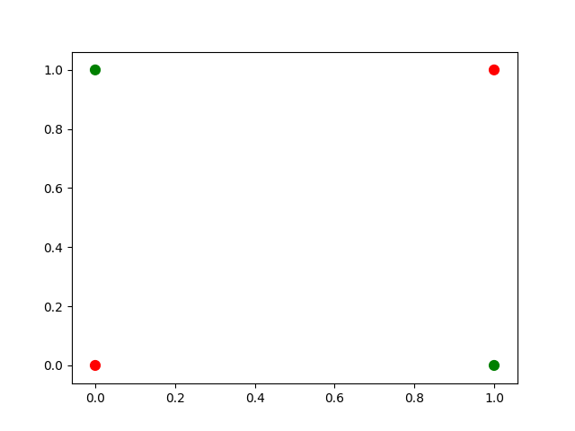

Neural Network Introduction
1 Introduction
Goals
- What is a neural network?
- What mathematics are needed to build a neural network?
- How can neural networks help us understand cognition?
2 Be the Neuron
For this exercise you will need a sheet of graph paper and a rule. Begin with the top row of the graph paper. Your rule will specify how the color of a square of the graph paper depends on the color of neighboring cells in the row immediately above. Our rule depends on three cells only and is like the gentleman at the football match deciding whether to stand or sit when making the wave. Each square in the grid of your graph paper decides whether to be blank or colored-in based on the three squares above it

2.1 Rules
Figure 1: Rule 90
Figure 2: Rule 60
Figure 3: Rule 110

Figure 4: Rule 250
2.2 Instructions
- Color in the very center square of the very top row of the graph paper.
- Proceeding from left to right, color every square in the second row based on the rule you selected. In this row every cell will be left uncolored except for those near the center, because these rules all specify that a cell with three uncolored grids above remains uncolored. But how you treat the ones near the center will depend on the rule. For example, for rule 60, the cell immediately beneath the center, colored, square of row 1 will be colored, as will the one immediately to its right.
- Repeat this process working down until you can clearly see the pattern, or you give up in despair.
Compare your results from using different rules.
2.3 Food for Thought
How many rules are there? This is an exercise in combinatorics. The field of mathematics for computing combinations. You know how many inputs there can be: there are three cells and each can be white or gray, . But how many output patterns are there that each rule can be matched with?
- Comments noexport
What this exercise illustrates (pun intended) is that remarkable global structure can emerge from the consistent application of simple rules. By analogy think of a neuron computing whether or not to spike based on the input it receives from a small set of neighbors. A spike becomes a decision, like whether or not to color a grid of the graph paper. The neuron does not need to know the global objective in order to do its job properly. The global structure takes care of itself.
This example also emphasizes the components of many neural networks. Each grid square is a node. It took inputs, the colors of the three squares above it, and it (or rather you) computed its output: its color. The connectivity was implicit in the structure we used. Each node (grid cell) was wired to the three nodes, and only those three nodes, above it (for its input) and wired for output to the node directly beneath it and one to either side. If we change the connections, we change the network. If we change the rule for coloring, we change the network. There is nothing special or necessary about choosing to use three cells. In fact, von Neumann used a different, more complex architecture. Some mathematicians argue that such simple programs can give rise to all of our complex world.
2.4 What's the point
Local action can give rise to global properties
2.5 Cellular Automata
John Von Neumann
Automata and the Brain Commentary by Claude Shannon (PDF)
Stephen Wolfram
3 What is a Neural Network?
What is a Neural Network? It is a brain inspired computational approach in which "neurons" compute functions of their inputs and pass on a weighted proportion to the next neuron in the chain.
3.1 An example: the threshold unit

Figure 5: Threshold Unit: If  then Output = 1.
3.1.1 Short Description
The structure of the threshold unit illustrates the basic mechanics of many neural networks: Inputs are passed to the first layer, which in turn are passed to downstream units (only one shown here). A weighted sum (or possibly a function of the weighted sum) leads to an intermediate output that is then passed to the next layer of the network. In this case the weighted sum is fed into a threshold function that compares the value to a threshold, and passes on the value 1 if it is greater than the threshold and 0 otherwise.
3.1.2 Question
What is the equivalent to in a real neuron?
3.1.3 Answer noexport
The threshold for an action potential.
3.1.4 Questions
What, geometrically speaking, is a plane?
What is a hyperplane?
How does the idea of a plane or hyperplane relate to the notion of linearly separable?
3.1.5 Examples
- AND
import matplotlib import matplotlib.pyplot as p cs = ["#ff0000","#ff0000","#ff0000","#008000"] p.scatter([0, 1, 0, 1],[0,0,1,1],color=cs,s = 60) p.savefig('./and.png') return './and.png'

Figure 6: Draw a line that separates green from red
- XOR
import matplotlib import matplotlib.pyplot as p cs = ["#ff0000", "#008000", "#008000", "#ff0000"] p.scatter([0, 1, 0, 1],[0,0,1,1],color=cs,s = 60) p.savefig('./xor.png') return './xor.png'

Figure 7: Draw a line that separates green from red

Figure 8: Figure from a Nature Biotechnology article on neural networks. doi:10.1038/nbt1386
3.2 Boolean Logic
3.2.1 George Boole, Author of the Laws of Thought
3.2.2 First Order Logic - Truth Tables
Or
Table 1: Or Pr. A Pr. B Or 1 1 1 0 0 0 0 1 1 1 0 1 And
Table 2: And Pr. A Pr. B And 1 1 1 0 0 0 0 1 0 1 0 0 Nand
Table 3: Nand Pr. A Pr. B NAND 1 1 0 0 0 1 0 1 1 1 0 1
3.2.3 Why Logic
- Question:
Why should the operations of truth tables and logic be considered relevant for models of human cognition or models of the nervous system?
- Answer: noexport
Possible answers. Not necessarily "right" answers.
- Human thought is fundamentally logical.
- General https://plato.stanford.edu/entries/cognitive-science/#ForLog
- Mental Models - Philip Johnson Laird http://mentalmodels.princeton.edu/about/critics/
- Neuron firing can be treated as ones and zeros.
- McCullough and Pitts http://link.springer.com/article/10.1007/BF02478259
- History of a search for logic in the nervous system http://muse.jhu.edu/article/46496
- Human thought is fundamentally logical.
- Answer: noexport
4 Assignments
- Present me with a concise demonstration of the following, which could be a program or an excel spread sheet. This will require that you know what a vector and matrix are. Wikipedia is fine here, but you can use another source if you want. In fact, Wikipedia is more than you need. This python website provides a nice overview.
- How to multiply two vectors together in the operation called a dot product. You can either do it with formulas in a spreadsheet or using a loop in some programming language, but you can't just use some special inbuilt function. I need to see enough to know that you understand what is actually taking place - then we will just use the built in functions as we progress.
- Show how this operation relates to the threshold neuron illustrated above in Figure 1.
- Demonstrate that matrix multiplication is "non-commutative."